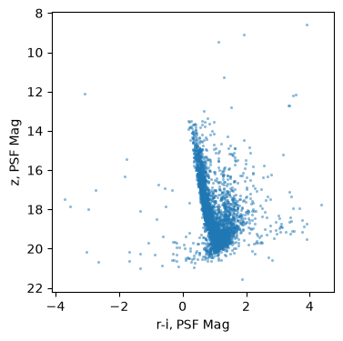
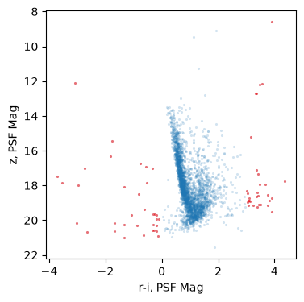
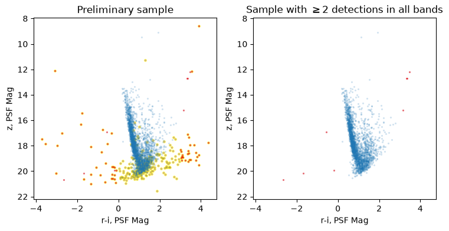

Accessing Roman Catalogs: Leveraging Ancillary Tables and Visualization to Apply Data Quality Cuts#
Learning Goals#
By the end of this tutorial, you will:
Understand how to launch and programatically control MAST Aladin to view targets on the sky from within a notebook, including overlaying a set of targets and observation footprints on the sky.
Understand how to use the MAST catalog schema browser to discover ancillary tables.
Understand how to “decode” catalog bitflags, aided by a bitflag “helper” class and the bitflag definition documentation (or database flag definition tables).
Table of Contents#
Introduction#
This notebook demonstrates how to leverage catalog queries together with MAST Aladin (to view objects on the sky) and the MAST Catalog Schema Browser to examine a selected sample, investigate data quality issues, and identify quality flags that can be used to refine the sample for analysis.
MAST will provide access to a range of Roman catalog products. In addition to analysis-ready measurements of observed and derived physical quantities, Roman catalogs will include ancillary information about, e.g., data quality, processing flags, and data provenance (such as the primary/overlap designation bit flag in the flagged_spatial_id identifiers in WFI multiband photometric source catalogs). This notebook demonstrates how to query candidate stars in the Galactic Bulge using multiband photometry, view the targets in MAST Aladin, and then examine data quality flag information from ancillary tables/columns to determine how to exclude data artifacts and spurious sources from the analysis.
Imports#
This tutorial makes use of the following packages:
astroquery.mast Catalogs, Observations for querying the MAST catalog database and observation holdings
astropy.coordinates SkyCoord for defining sky coordinates
astropy.units to specify angular units
numpy for numerical calculations
matplotlib.pyplot for plotting catalog data
mast_aladin to view targets on the sky
sidecar Sidecar to display MAST-Aladin alongside the notebook
time to enable time delays when flipping through objects with MAST-Aladin
astropy.table Table to construct tables from flag values
A simple “flag helper class” PanSTARRSFlagHelper to retrieve definitions (from a table via a MAST TAP service), represent, and help parse data quality flags encoded as bitflags for easier readibility.
from astroquery.mast import Catalogs, Observations
from astropy.coordinates import SkyCoord
from astropy.table import Table
import astropy.units as u
import numpy as np
from mast_aladin import MastAladin
from sidecar import Sidecar
import matplotlib.pyplot as plt
from flag_helper import PanSTARRSFlagHelper
import time
Identification and quality checks on candidate stars in the Galactic Bulge#
In this notebook, we will construct a color-magnitude diagram (\(r-i\) vs \(z\)) of stars in the Milky Way bulge near the Galactic Center, from which specific categories of stars can be selected for further analysis.
For demonstration purposes (as Roman catalogs are not yet available), PanSTARRS will be used as the example dataset. Similar to Roman (particularly the WFI multiband photometric source catalogs), PanSTARRS features a rich set of ancillary tables containing data quality and processing flags — providing a reasonable analog to demonstrate MAST data access and visualization tools that will be available for use with Roman.
(In the interest of simplicity, this example will omit crossmatching to Gaia to leverage Gaia-derived distances to exclude fore/background objects.)
Identifying candidate stars in the Galactic Bulge#
In this example, we aim to identify stars in the Galactic Bulge by constructing a \(r-i\) vs \(z\) color magnitude diagram. We begin with the following selection criteria:
Located within 0.1 degree of the Galactic center
Are point sources (excluding extended objects, such as galaxies).
Have measured \(r\), \(i\), \(z\) magnitudes
Querying the PanSTARRS catalog#
First, we consult the PanSTARRS DR2 catalogs documentation and the MAST Catalog Schema Browser](https://mast.stsci.edu/schema_browser/#/ps1_dr2/mean_object) to investigate the available tables and columns.
We determine that we can obtain all necessary information from the PanSTARRS DR2 “mean” table, which we can access using astroquery.mast.
To construct our query, we begin by obtaining the sky coordinates for the Galactic center using astropy.
# Use the Astropy SkyCoord name resolver to get
# the position of the galactic center in the ICRS frame
gc = SkyCoord.from_name("Galactic center")
gc
<SkyCoord (ICRS): (ra, dec) in deg
(266.41500889, -29.00611111)>
Based on PanSTARRS documentation (from astroquery.mast and the PanSTARRS DR2 documentation), we see the MeanObject catalog provides the relevant photometric information (in the columns rMeanPSFMag, iMeanPSFMag, zMeanPSFMag), as well as position information (RA/Dec).
Using the Catalogs module of astroquery.mast,
we query the PanSTARRS mean_object table to perform a cone search of 0.1 degree around the Galactic Center, restricting the results to objcts with \(r\), \(i\), \(z\) magnitudes > -999 (the placeholder used for missing values in the database).
# Query the PanSTARRS DR2 Mean catalog aroung the
# Galactic center, with available z,r,i magnitudes
sample = Catalogs.query_criteria(
collection="ps1_dr2",
catalog="mean_object",
coordinates=gc,
radius=0.1*u.deg,
rMeanPSFMag=">-999", # missing magnitudes are -999
iMeanPSFMag=">-999", # missing magnitudes are -999
zMeanPSFMag=">-999", # missing magnitudes are -999
)
(Note: the returned table column names are all lower case, which we use below.)
Next, to distinguish stars (point sources) from extended objects, we will make a cut using the PSF and Kron magnitudes in the i band, as point sources typically have iMeanPSFMag-iMeanKronMag <= 0.05 (as recommended in the PanSTARRS documentation).
sample = sample[
sample['imeanpsfmag']-sample['imeankronmag'] <= 0.05
]
Finally, we will sort our sample by descending “objID” for consistent ordering.
sample.sort("objid", reverse=True)
Our resulting sample has 2906 candidate stars:
sample
| objname | objaltname1 | objaltname2 | objaltname3 | objid | uniquepspsobid | ippobjid | surveyid | htmid | zoneid | tessid | projectionid | skycellid | randomid | batchid | dvoregionid | processingversion | objinfoflag | qualityflag | rastack | decstack | rastackerr | decstackerr | rameanerr | decmeanerr | epochmean | posmeanchisq | cx | cy | cz | lambda | beta | l | b | nstackobjectrows | nstackdetections | ndetections | ng | nr | ni | nz | ny | gqfperfect | gmeanpsfmag | gmeanpsfmagerr | gmeanpsfmagstd | gmeanpsfmagnpt | gmeanpsfmagmin | gmeanpsfmagmax | gmeankronmag | gmeankronmagerr | gmeankronmagstd | gmeankronmagnpt | gmeanapmag | gmeanapmagerr | gmeanapmagstd | gmeanapmagnpt | gflags | rqfperfect | rmeanpsfmag | rmeanpsfmagerr | rmeanpsfmagstd | rmeanpsfmagnpt | rmeanpsfmagmin | rmeanpsfmagmax | rmeankronmag | rmeankronmagerr | rmeankronmagstd | rmeankronmagnpt | rmeanapmag | rmeanapmagerr | rmeanapmagstd | rmeanapmagnpt | rflags | iqfperfect | imeanpsfmag | imeanpsfmagerr | imeanpsfmagstd | imeanpsfmagnpt | imeanpsfmagmin | imeanpsfmagmax | imeankronmag | imeankronmagerr | imeankronmagstd | imeankronmagnpt | imeanapmag | imeanapmagerr | imeanapmagstd | imeanapmagnpt | iflags | zqfperfect | zmeanpsfmag | zmeanpsfmagerr | zmeanpsfmagstd | zmeanpsfmagnpt | zmeanpsfmagmin | zmeanpsfmagmax | zmeankronmag | zmeankronmagerr | zmeankronmagstd | zmeankronmagnpt | zmeanapmag | zmeanapmagerr | zmeanapmagstd | zmeanapmagnpt | zflags | yqfperfect | ymeanpsfmag | ymeanpsfmagerr | ymeanpsfmagstd | ymeanpsfmagnpt | ymeanpsfmagmin | ymeanpsfmagmax | ymeankronmag | ymeankronmagerr | ymeankronmagstd | ymeankronmagnpt | ymeanapmag | ymeanapmagerr | ymeanapmagstd | ymeanapmagnpt | yflags | astrometrycorrectionflag | pmra | pmdec | pmraerr | pmdecerr | decmean | ramean |
|---|---|---|---|---|---|---|---|---|---|---|---|---|---|---|---|---|---|---|---|---|---|---|---|---|---|---|---|---|---|---|---|---|---|---|---|---|---|---|---|---|---|---|---|---|---|---|---|---|---|---|---|---|---|---|---|---|---|---|---|---|---|---|---|---|---|---|---|---|---|---|---|---|---|---|---|---|---|---|---|---|---|---|---|---|---|---|---|---|---|---|---|---|---|---|---|---|---|---|---|---|---|---|---|---|---|---|---|---|---|---|---|---|---|---|---|---|---|---|---|---|---|---|---|---|---|---|---|---|
| deg | deg | mas | mas | mas | mas | d | deg | deg | deg | deg | mag | mag | mag | mag | mag | mag | mag | mag | mag | mag | mag | mag | mag | mag | mag | mag | mag | mag | mag | mag | mag | mag | mag | mag | mag | mag | mag | mag | mag | mag | mag | mag | mag | mag | mag | mag | mag | mag | mag | mag | mag | mag | mag | mag | mag | mag | mag | mag | mag | mag | mag | mag | mag | mag | mag | mas | mas | mas | mas | deg | deg | |||||||||||||||||||||||||||||||||||||||||||||||||||||||||
| object | object | object | object | int64 | int64 | int64 | uint8 | int64 | int32 | uint8 | int16 | uint8 | float64 | int64 | int32 | uint8 | int32 | uint8 | float64 | float64 | float32 | float32 | float32 | float32 | float64 | float32 | float64 | float64 | float64 | float64 | float64 | float64 | float64 | int16 | int16 | int16 | int16 | int16 | int16 | int16 | int16 | float32 | float32 | float32 | float32 | int16 | float32 | float32 | float32 | float32 | float32 | int16 | float32 | float32 | float32 | int16 | int32 | float32 | float32 | float32 | float32 | int16 | float32 | float32 | float32 | float32 | float32 | int16 | float32 | float32 | float32 | int16 | int32 | float32 | float32 | float32 | float32 | int16 | float32 | float32 | float32 | float32 | float32 | int16 | float32 | float32 | float32 | int16 | int32 | float32 | float32 | float32 | float32 | int16 | float32 | float32 | float32 | float32 | float32 | int16 | float32 | float32 | float32 | int16 | int32 | float32 | float32 | float32 | float32 | int16 | float32 | float32 | float32 | float32 | float32 | int16 | float32 | float32 | float32 | int16 | int32 | uint8 | float32 | float32 | float32 | float32 | float64 | float64 |
| PSO J266.4148-28.9061 | -999 | -999 | -999 | 73312664147912990 | 3526718000013439 | 511109698172032 | 0 | 11710823714680 | 7331 | 1 | 693 | 70 | 0.764368522692815 | 3526718 | 119002 | 3 | 436527104 | 52 | 266.41478676 | -28.90610598 | 0.001 | 0.001 | 0.0070586307 | 0.0070586307 | 55927.67218421359 | 2.977626 | -0.05474229746111264 | -0.8736995987831238 | -0.48337593232895626 | 266.847371042176 | -5.506067272511191 | 0.03010305808887179 | 0.00834130681494409 | -999 | 5 | 43 | 0 | 8 | 10 | 13 | 12 | -999.0 | -999.0 | -999.0 | -999.0 | 0 | -999.0 | -999.0 | -999.0 | -999.0 | -999.0 | 0 | -999.0 | -999.0 | -999.0 | 0 | 114720 | 0.998891 | 21.3498 | 0.061316 | 0.219186 | 5 | 21.2942 | 21.7458 | 21.3105 | 0.105665 | 0.609897 | 4 | 21.2082 | 0.080092 | 0.766996 | 5 | 115000 | 0.999104 | 19.8697 | 0.072825 | 0.111847 | 4 | 19.8166 | 19.9951 | 19.965 | 0.095545 | 0.159543 | 4 | 19.8827 | 0.103618 | 0.178087 | 4 | 115000 | 0.998817 | 19.1733 | 0.022056 | 0.194126 | 7 | 19.1342 | 19.6215 | 19.3604 | 0.065533 | 0.351007 | 6 | 19.227 | 0.037813 | 0.12218 | 6 | 114992 | 0.998956 | 18.9296 | 0.039735 | 0.120504 | 7 | 18.7681 | 19.0617 | 19.7013 | 0.31707 | 0.589191 | 6 | 19.7993 | 0.01751 | 0.336853 | 7 | 115000 | 7 | -5.892208 | -21.073942 | 5.3919663 | 5.3919663 | -28.90612260697708 | 266.4147770200182 |
| PSO J266.4113-28.9084 | -999 | -999 | -999 | 73312664113250267 | 3526718000012839 | 511109698171432 | 0 | 11710823704335 | 7331 | 1 | 693 | 70 | 0.489421554365588 | 3526718 | 119002 | 3 | 503635968 | 60 | 266.41132436 | -28.90838389 | 0.001 | 0.001 | 0.0002902839 | 0.0002907789 | 56064.83036509671 | 61.33877 | -0.05479397074219825 | -0.8736771513453905 | -0.4834106494351431 | 266.8443757444756 | -5.508410676770176 | 0.02658374167397246 | 0.009753797166211999 | -999 | 5 | 63 | 17 | 10 | 12 | 12 | 12 | 0.999828 | 16.7477 | 0.006301 | 0.014903 | 10 | 16.7284 | 16.7706 | 16.7989 | 0.003505 | 0.017162 | 11 | 16.7298 | 0.005469 | 0.01737 | 11 | 115000 | 0.998943 | 15.7687 | 0.006629 | 0.011305 | 6 | 15.7531 | 15.7818 | 15.8248 | 0.007763 | 0.014294 | 7 | 15.7577 | 0.010988 | 0.02169 | 7 | 115000 | 0.999453 | 15.2556 | 0.000177 | 0.00558 | 5 | 15.2452 | 15.259 | 15.314 | 0.002996 | 0.010585 | 8 | 15.2517 | 0.005702 | 0.010646 | 8 | 115000 | 0.99985 | 14.9433 | 0.003342 | 0.009762 | 7 | 14.9253 | 14.9518 | 14.986 | 0.005434 | 0.030208 | 9 | 14.927 | 0.008166 | 0.02463 | 9 | 114992 | 0.999285 | 14.7855 | 0.005587 | 0.04294 | 10 | 14.7197 | 14.8379 | 14.8201 | 0.012729 | 0.010257 | 11 | 14.7877 | 0.009123 | 0.056917 | 11 | 115000 | 7 | 0.37823653 | -11.727919 | 0.21489641 | 0.21511844 | -28.908394866718794 | 266.4113096737104 |
| PSO J266.4065-28.9078 | -999 | -999 | -999 | 73312664065420964 | 3526718000011980 | 511109698170573 | 0 | 11710823889157 | 7331 | 1 | 693 | 70 | 0.519699596352595 | 3526718 | 119002 | 3 | 503635968 | 60 | 266.40653886 | -28.90780678 | 0.001 | 0.001 | 0.00045743337 | 0.00045955813 | 55968.43169296153 | 28.340628 | -0.05486724274815632 | -0.8736774656835025 | -0.4834017704043577 | 266.8401521219629 | -5.50792945698319 | 0.02490079151480977 | 0.013636306219625104 | -999 | 5 | 62 | 17 | 8 | 12 | 13 | 12 | 0.999702 | 17.8105 | 0.008651 | 0.018045 | 11 | 17.7764 | 17.8315 | 17.8824 | 0.009793 | 0.027138 | 11 | 17.7978 | 0.010912 | 0.026471 | 11 | 115000 | 0.999453 | 16.6078 | 0.003683 | 0.007635 | 5 | 16.6037 | 16.6179 | 16.6577 | 0.003096 | 0.01514 | 6 | 16.5928 | 0.008547 | 0.013387 | 6 | 115000 | 0.998781 | 15.9779 | 0.006093 | 0.011615 | 9 | 15.964 | 15.9932 | 16.0281 | 0.003923 | 0.006577 | 10 | 15.9685 | 0.003957 | 0.00653 | 10 | 115000 | 0.999352 | 15.5657 | 0.005643 | 0.015029 | 5 | 15.5429 | 15.5823 | 15.6124 | 0.010004 | 0.028709 | 6 | 15.5631 | 0.00974 | 0.031454 | 6 | 114992 | 0.999014 | 15.3297 | 0.009369 | 0.024988 | 7 | 15.2954 | 15.3601 | 15.4045 | 0.012496 | 0.033631 | 7 | 15.316 | 0.00941 | 0.028294 | 7 | 115000 | 7 | -2.850673 | 0.9082483 | 0.32712114 | 0.32724363 | -28.907813722987918 | 266.40652463391956 |
| PSO J266.3928-28.9082 | -999 | -999 | -999 | 73312663928400552 | 3526718000009518 | 511109698168111 | 0 | 11710823843175 | 7331 | 1 | 693 | 70 | 0.173465513785803 | 3526718 | 119002 | 3 | 436527104 | 52 | 266.39283765 | -28.90815399 | 0.001 | 0.001 | 0.0027350765 | 0.0027070804 | 55928.41677632242 | 4.3475966 | -0.05507598317521397 | -0.8736613841739089 | -0.48340709746611416 | 266.8281194934244 | -5.508582914594351 | 0.01835232180924498 | 0.023685916930894287 | -999 | 5 | 59 | 14 | 10 | 11 | 12 | 12 | 0.999531 | 21.3144 | 0.045576 | 0.148403 | 9 | 21.0593 | 21.4456 | 21.4877 | 0.092855 | 0.202394 | 7 | 21.4779 | 0.208816 | 0.521667 | 9 | 115000 | 0.999025 | 19.5711 | 0.005976 | 0.045692 | 6 | 19.5254 | 19.6567 | 19.6594 | 0.046031 | 0.155451 | 6 | 19.5611 | 0.033074 | 0.065438 | 6 | 115000 | 0.999369 | 18.6801 | 0.015781 | 0.018193 | 9 | 18.6627 | 18.7101 | 18.7583 | 0.021113 | 0.063553 | 9 | 18.6798 | 0.022948 | 0.043303 | 9 | 115000 | 0.998996 | 18.1486 | 0.010729 | 0.033271 | 7 | 18.0777 | 18.1695 | 18.2848 | 0.021113 | 0.131731 | 7 | 18.1951 | 0.01431 | 0.032569 | 7 | 114992 | 0.999842 | 17.9907 | 0.032032 | 0.127972 | 11 | 17.764 | 18.1452 | 18.221 | 0.010875 | 0.089552 | 9 | 18.123 | 0.016246 | 0.307358 | 11 | 115000 | 7 | 6.268403 | 2.1076665 | 1.980687 | 1.9685138 | -28.908162385488396 | 266.39282319368255 |
| PSO J266.4596-28.9166 | -999 | -999 | -999 | 73302664596120485 | 3526718000021334 | 511109698179927 | 0 | 11710820559351 | 7330 | 1 | 693 | 70 | 0.260685745869471 | 3526718 | 119002 | 3 | 503635968 | 60 | 266.45961358 | -28.91654044 | 0.001 | 0.001 | 0.00029077148 | 0.0002833123 | 55911.3653421161 | 112.62389 | -0.05405319632704648 | -0.8736543842366525 | -0.4835351785246916 | 266.8870419988373 | -5.515510611639258 | 0.041643385717449015 | -0.030585140109685893 | -999 | 5 | 76 | 25 | 8 | 14 | 14 | 15 | 0.99986 | 16.7213 | 0.003431 | 0.010922 | 22 | 16.6994 | 16.7375 | 16.7896 | 0.003058 | 0.013453 | 25 | 16.7142 | 0.003194 | 0.013862 | 25 | 115000 | 0.998375 | 15.9174 | 0.003167 | 0.006655 | 4 | 15.9086 | 15.9236 | 15.9624 | 0.002209 | 0.006378 | 6 | 15.9078 | 0.005181 | 0.008166 | 6 | 115000 | 0.998823 | 15.5521 | 0.002937 | 0.007409 | 7 | 15.5422 | 15.5607 | 15.5947 | 0.003004 | 0.007486 | 9 | 15.5361 | 0.003611 | 0.010244 | 9 | 115000 | 0.99947 | 15.3304 | 0.00306 | 0.007746 | 6 | 15.3226 | 15.345 | 15.3816 | 0.007319 | 0.017477 | 9 | 15.3085 | 0.004628 | 0.011875 | 9 | 114992 | 0.999835 | 15.2338 | 0.015708 | 0.039021 | 12 | 15.164 | 15.2347 | 15.308 | 0.014448 | 0.036045 | 12 | 15.2448 | 0.019015 | 0.047709 | 12 | 115000 | 7 | -0.16482891 | -8.938035 | 0.19212946 | 0.18769103 | -28.91654579525221 | 266.4596098804736 |
| PSO J266.4557-28.9145 | -999 | -999 | -999 | 73302664557452925 | 3526718000020667 | 511109698179260 | 0 | 11710820571234 | 7330 | 1 | 693 | 70 | 0.881059124023709 | 3526718 | 119002 | 3 | 436527104 | 52 | 266.45574003 | -28.91451411 | 0.001 | 0.001 | 0.0011210607 | 0.0010858217 | 55833.99970269575 | 5.112461 | -0.054113318695001314 | -0.8736678421942318 | -0.4835041367511638 | 266.8835872042989 | -5.513564406856752 | 0.04161213428694835 | -0.02663392285882768 | -999 | 5 | 78 | 26 | 10 | 14 | 14 | 14 | 0.999836 | 19.6969 | 0.011879 | 0.06174 | 26 | 19.6308 | 19.8811 | 19.8548 | 0.022247 | 0.130861 | 26 | 19.8507 | 0.032595 | 0.238899 | 26 | 115000 | 0.998936 | 18.4268 | 0.00703 | 0.021514 | 8 | 18.388 | 18.441 | 18.5449 | 0.028993 | 0.060575 | 8 | 18.4552 | 0.019929 | 0.055427 | 8 | 115000 | 0.999606 | 17.7905 | 0.001956 | 0.032377 | 9 | 17.7363 | 17.8205 | 17.8402 | 0.01708 | 0.022406 | 9 | 17.7678 | 0.004221 | 0.032074 | 9 | 115000 | 0.999379 | 17.3464 | 0.007168 | 0.038244 | 10 | 17.3235 | 17.413 | 17.4524 | 0.015814 | 0.063112 | 10 | 17.3674 | 0.012681 | 0.055227 | 10 | 114992 | 0.999119 | 17.1154 | 0.007005 | 0.018891 | 8 | 17.0933 | 17.1425 | 17.2308 | 0.019522 | 0.081095 | 8 | 17.1196 | 0.019376 | 0.062722 | 8 | 114992 | 7 | -0.81038105 | -5.046962 | 0.78591174 | 0.7709051 | -28.91451392670525 | 266.4557364604022 |
| PSO J266.4551-28.9129 | -999 | -999 | -999 | 73302664550964871 | 3526718000020552 | 511109698179145 | 0 | 11710820554420 | 7330 | 1 | 693 | 70 | 0.665235193134505 | 3526718 | 119002 | 3 | 436527104 | 52 | 266.45509699 | -28.91288967 | 0.001 | 0.001 | 0.0010219155 | 0.0010122373 | 55914.46624291296 | 3.5007098 | -0.05412396863838971 | -0.8736809003583604 | -0.48347934843986373 | 266.88297906670664 | -5.511955811544087 | 0.0427034555252411 | -0.02530613701194428 | -999 | 5 | 81 | 26 | 10 | 14 | 16 | 15 | 0.999565 | 19.6135 | 0.010699 | 0.038455 | 24 | 19.5204 | 19.688 | 19.7671 | 0.012574 | 0.079666 | 26 | 19.6898 | 0.021447 | 0.093802 | 26 | 115000 | 0.998738 | 18.3532 | 0.009945 | 0.026508 | 9 | 18.3044 | 18.3881 | 18.4768 | 0.021128 | 0.044339 | 9 | 18.39 | 0.018448 | 0.032467 | 9 | 115000 | 0.999439 | 17.6833 | 0.003458 | 0.017937 | 8 | 17.6543 | 17.6944 | 17.774 | 0.00861 | 0.020461 | 8 | 17.6885 | 0.00536 | 0.014195 | 8 | 115000 | 0.999269 | 17.2662 | 0.006371 | 0.030518 | 8 | 17.2063 | 17.314 | 17.3748 | 0.015131 | 0.05203 | 9 | 17.2957 | 0.005803 | 0.019022 | 9 | 114992 | 0.999628 | 17.0213 | 0.043709 | 0.039336 | 11 | 16.9654 | 17.0923 | 17.1849 | 0.01342 | 0.097186 | 10 | 17.076 | 0.005821 | 0.047435 | 12 | 115000 | 7 | -2.6508658 | -9.321629 | 0.67698455 | 0.6729033 | -28.912891413004118 | 266.4550935473552 |
| PSO J266.4544-28.9167 | -999 | -999 | -999 | 73302664543610230 | 3526718000020428 | 511109698179021 | 0 | 11710820580774 | 7330 | 1 | 693 | 70 | 0.491885742630703 | 3526718 | 119002 | 3 | 436527104 | 52 | 266.45436476 | -28.91674831 | 0.001 | 0.001 | 0.008073305 | 0.008073305 | 55908.53265045844 | 2.7811184 | -0.05413325808800559 | -0.873647766004334 | -0.48353817980012054 | 266.88242547582115 | -5.515820998846939 | 0.0390796070127061 | -0.026759075737074783 | -999 | 3 | 39 | 0 | 0 | 10 | 12 | 17 | -999.0 | 27.062 | -999.0 | -999.0 | 0 | -999.0 | -999.0 | -999.0 | -999.0 | -999.0 | 0 | -999.0 | -999.0 | -999.0 | 0 | 16420 | -999.0 | 23.207 | -999.0 | -999.0 | 0 | -999.0 | -999.0 | -999.0 | -999.0 | -999.0 | 0 | -999.0 | -999.0 | -999.0 | 0 | 16420 | 0.999152 | 21.2671 | 0.046245 | 0.129863 | 8 | 21.093 | 21.4584 | 21.3633 | 0.171428 | 0.200328 | 5 | 21.3277 | 0.166256 | 0.520896 | 8 | 115000 | 0.999331 | 19.5779 | 0.021768 | 0.077072 | 7 | 19.5217 | 19.7204 | 19.7992 | 0.073163 | 0.203064 | 5 | 19.7308 | 0.085828 | 0.209303 | 7 | 114992 | 0.999847 | 18.38 | 0.011155 | 0.163366 | 15 | 18.2675 | 18.6709 | 18.4734 | 0.043479 | 0.320322 | 7 | 18.3411 | 0.105891 | 0.423534 | 11 | 115000 | 7 | 8.720977 | 4.3033338 | 5.703452 | 5.703452 | -28.916742248674723 | 266.4543525512401 |
| PSO J266.4507-28.9145 | -999 | -999 | -999 | 73302664506962987 | 3526718000019818 | 511109698178411 | 0 | 11710820570706 | 7330 | 1 | 693 | 70 | 0.0436405875195196 | 3526718 | 119002 | 3 | 436527104 | 52 | 266.45069911 | -28.91446245 | 0.001 | 0.001 | 0.0013823385 | 0.0013434916 | 55846.41452771297 | 7.5354714 | -0.054190256561050476 | -0.8736634905309293 | -0.4835033830359002 | 266.8791548937404 | -5.513613621764997 | 0.03936616894062861 | -0.02283628161515323 | -999 | 5 | 79 | 26 | 9 | 12 | 17 | 15 | 0.999391 | 19.9817 | 0.017403 | 0.080103 | 23 | 19.8589 | 20.1313 | 20.1519 | 0.025571 | 0.110551 | 23 | 20.1126 | 0.030303 | 0.166824 | 23 | 115000 | 0.999708 | 18.7017 | 0.002362 | 0.044273 | 6 | 18.6338 | 18.7091 | 18.8178 | 0.024338 | 0.064314 | 6 | 18.7326 | 0.024172 | 0.028244 | 6 | 115000 | 0.998669 | 18.0361 | 0.024 | 0.026817 | 7 | 17.9867 | 18.0538 | 18.1383 | 0.006168 | 0.035655 | 8 | 18.0599 | 0.012947 | 0.03296 | 8 | 115000 | 0.999615 | 17.6134 | 0.004802 | 0.020473 | 9 | 17.5725 | 17.6384 | 17.6752 | 0.008035 | 0.032264 | 10 | 17.5664 | 0.00839 | 0.03023 | 10 | 114992 | 0.99949 | 17.3175 | 0.012027 | 0.040276 | 12 | 17.2206 | 17.34 | 17.3019 | 0.022991 | 0.069831 | 12 | 17.3198 | 0.025668 | 0.111352 | 12 | 114992 | 7 | 4.4773464 | -0.63228834 | 0.9526122 | 0.9410091 | -28.91446459205714 | 266.45069249505644 |
| ... | ... | ... | ... | ... | ... | ... | ... | ... | ... | ... | ... | ... | ... | ... | ... | ... | ... | ... | ... | ... | ... | ... | ... | ... | ... | ... | ... | ... | ... | ... | ... | ... | ... | ... | ... | ... | ... | ... | ... | ... | ... | ... | ... | ... | ... | ... | ... | ... | ... | ... | ... | ... | ... | ... | ... | ... | ... | ... | ... | ... | ... | ... | ... | ... | ... | ... | ... | ... | ... | ... | ... | ... | ... | ... | ... | ... | ... | ... | ... | ... | ... | ... | ... | ... | ... | ... | ... | ... | ... | ... | ... | ... | ... | ... | ... | ... | ... | ... | ... | ... | ... | ... | ... | ... | ... | ... | ... | ... | ... | ... | ... | ... | ... | ... | ... | ... | ... | ... | ... | ... | ... | ... | ... | ... | ... | ... | ... | ... |
| PSO J266.4163-29.1059 | -999 | -999 | -999 | 73072664163533243 | 3526962000014375 | 511092518303786 | 0 | 11710814721085 | 7307 | 1 | 693 | 70 | 0.551312843851105 | 3526962 | 118998 | 3 | 436527104 | 52 | 266.41634343 | -29.10591786 | 0.001 | 0.001 | 0.0041510947 | 0.0041510947 | 56040.48076540702 | 6.2278366 | -0.05461292574532506 | -0.8720134735557573 | -0.486425667783638 | 266.85375482834365 | -5.705762461567769 | 359.8602729082378 | -0.09690259025787783 | -999 | 5 | 34 | 2 | 6 | 10 | 9 | 7 | 0.998088 | 21.9383 | 0.064084 | 0.091509 | 2 | 21.8832 | 22.0114 | -999.0 | -999.0 | -999.0 | 2 | 21.5335 | 0.045851 | 0.06546 | 2 | 114992 | 0.998229 | 20.3468 | 0.10348 | 0.206601 | 2 | 20.3464 | 20.5534 | 20.6564 | 0.101168 | -999.0 | 1 | 20.6943 | 2.8e-05 | -999.0 | 2 | 115000 | 0.999706 | 19.3241 | 0.019993 | 0.068775 | 7 | 19.3023 | 19.4687 | 19.4758 | 0.055606 | 0.082484 | 7 | 19.3858 | 0.054322 | 0.082105 | 7 | 115000 | 0.999672 | 18.7931 | 0.016066 | 0.045283 | 8 | 18.7227 | 18.8524 | 18.9781 | 0.03174 | 0.168035 | 8 | 18.9241 | 0.030154 | 0.17095 | 8 | 114992 | 0.998822 | 18.407 | 0.051268 | 0.195363 | 5 | 18.1872 | 18.726 | 18.6028 | 0.011777 | 0.05122 | 3 | 18.5244 | 0.063972 | 0.168108 | 5 | 115000 | 7 | 0.13514704 | -9.42143 | 3.194401 | 3.194401 | -29.105920574402727 | 266.41632986593146 |
| PSO J266.4148-29.1040 | -999 | -999 | -999 | 73072664148225512 | 3526962000014026 | 511092518303437 | 0 | 11710814739237 | 7307 | 1 | 693 | 70 | 0.374451386159706 | 3526962 | 118998 | 3 | 503635968 | 60 | 266.41481665 | -29.10403352 | 0.001 | 0.001 | 0.0003020419 | 0.00028558227 | 56225.0459685395 | 170.21924 | -0.05463701025152244 | -0.872027973396164 | -0.48639696825263434 | 266.85236925496497 | -5.703915992241392 | 359.8611839745609 | -0.09478592941077839 | -999 | 5 | 63 | 25 | 8 | 10 | 10 | 10 | 0.999766 | 16.1048 | 0.002397 | 0.008047 | 16 | 16.0907 | 16.1183 | 16.163 | 0.002045 | 0.008641 | 17 | 16.0969 | 0.001671 | 0.005784 | 17 | 115000 | 0.998803 | 15.3339 | 0.004701 | 0.00907 | 4 | 15.3238 | 15.3422 | 15.367 | 0.003965 | 0.006855 | 5 | 15.3288 | 0.009557 | 0.02528 | 5 | 115000 | 0.998551 | 14.9267 | 0.002652 | 0.014285 | 5 | 14.9046 | 14.9399 | 14.9864 | 0.002246 | 0.00524 | 5 | 14.9211 | 0.001909 | 0.00392 | 5 | 115000 | 0.999602 | 14.6859 | 0.001803 | 0.004734 | 4 | 14.6809 | 14.692 | 14.7884 | 0.003364 | 0.009755 | 7 | 14.7052 | 0.014339 | 0.034194 | 7 | 114992 | 0.998807 | 14.5414 | 0.00374 | 0.030501 | 5 | 14.5045 | 14.5825 | 14.7396 | 0.074895 | 0.148003 | 6 | 14.7238 | 0.10254 | 0.20984 | 6 | 115000 | 7 | 5.8455477 | -8.572473 | 0.221526 | 0.21033978 | -29.104038571850154 | 266.41481303420676 |
| PSO J266.4135-29.1027 | -999 | -999 | -999 | 73072664135277120 | 3526962000013781 | 511092518303192 | 0 | 11710814740308 | 7307 | 1 | 693 | 70 | 0.165712189083651 | 3526962 | 118998 | 3 | 503635968 | 60 | 266.41351423 | -29.10268024 | 0.001 | 0.001 | 0.0023281826 | 0.0022338706 | 56022.42966362217 | 4.0016465 | -0.05465754563729599 | -0.8720381583189122 | -0.48637640068229737 | 266.85119457651757 | -5.702594073247435 | 359.8617454071643 | -0.09311305569772489 | -999 | 4 | 34 | 0 | 6 | 9 | 8 | 11 | -999.0 | 23.381 | -999.0 | -999.0 | 0 | -999.0 | -999.0 | -999.0 | -999.0 | -999.0 | 0 | -999.0 | -999.0 | -999.0 | 0 | 16420 | 0.998223 | 20.454 | 0.069296 | 0.112992 | 6 | 20.314 | 20.6019 | 20.5586 | 0.083303 | 0.219656 | 6 | 20.4768 | 0.137471 | 0.295199 | 6 | 115000 | 0.999344 | 18.6592 | 0.031698 | 0.0264 | 6 | 18.6168 | 18.6832 | 18.8382 | 0.029083 | 0.044432 | 5 | 18.7126 | 0.026404 | 0.031134 | 5 | 115000 | 0.999638 | 17.4691 | 0.01401 | 0.062837 | 7 | 17.4529 | 17.5799 | 17.5687 | 0.009326 | 0.067788 | 5 | 17.65 | 0.078213 | 0.338006 | 7 | 114992 | 0.999519 | 16.657 | 0.006541 | 0.033099 | 8 | 16.649 | 16.7127 | 16.6753 | 0.029932 | 0.157221 | 8 | 16.637 | 0.012694 | 0.123787 | 8 | 115000 | 7 | 9.535638 | 1.5697489 | 2.062752 | 1.9609464 | -29.102689852515642 | 266.41351083331534 |
| PSO J266.4121-29.1036 | -999 | -999 | -999 | 73072664120656079 | 3526962000013507 | 511092518302918 | 0 | 11710814745138 | 7307 | 1 | 693 | 70 | 0.686256891755626 | 3526962 | 118998 | 3 | 436527104 | 52 | 266.41204779 | -29.10355202 | 0.001 | 0.001 | 0.0015238022 | 0.0014990311 | 56187.041710321566 | 17.621878 | -0.05467946390609488 | -0.8720294428831148 | -0.48638956297592023 | 266.84993492214244 | -5.7034954556026305 | 359.8603384722594 | -0.09247737508697682 | -999 | 5 | 68 | 23 | 10 | 10 | 12 | 13 | 0.999481 | 20.0238 | 0.019978 | 0.076223 | 18 | 19.9017 | 20.2065 | 20.1333 | 0.030687 | 0.1012 | 18 | 20.1173 | 0.038211 | 0.116103 | 18 | 115000 | 0.999324 | 18.6359 | 0.012922 | 0.028001 | 5 | 18.6254 | 18.671 | 18.7032 | 0.002522 | 0.029865 | 5 | 18.6022 | 0.009065 | 0.036291 | 5 | 115000 | 0.998768 | 17.8899 | 0.013051 | 0.022656 | 6 | 17.8621 | 17.9227 | 17.9911 | 0.003932 | 0.008708 | 5 | 17.8961 | 0.006496 | 0.008436 | 5 | 115000 | 0.999703 | 17.4223 | 0.012549 | 0.037071 | 7 | 17.3558 | 17.47 | 17.4908 | 0.007259 | 0.052571 | 7 | 17.3957 | 0.028963 | 0.083506 | 7 | 114992 | 0.999644 | 17.1387 | 0.029222 | 0.049898 | 9 | 17.0931 | 17.2227 | 17.265 | 0.008056 | 0.083565 | 9 | 17.1588 | 0.018722 | 0.096538 | 9 | 115000 | 7 | 7.074168 | 1.2938998 | 1.0947742 | 1.0652758 | -29.103552968466015 | 266.4120406028719 |
| PSO J266.4112-29.1036 | -999 | -999 | -999 | 73072664112026015 | 3526962000013330 | 511092518302741 | 0 | 11710814745260 | 7307 | 1 | 693 | 70 | 0.919058672077077 | 3526962 | 118998 | 3 | 436527104 | 52 | 266.4111924 | -29.10359046 | 0.001 | 0.001 | 0.0066784113 | 0.0066784113 | 56043.207410043695 | 6.0418587 | -0.054692732637680624 | -0.8720282240867459 | -0.4863902562682965 | 266.8491581415507 | -5.703549951542324 | 359.85990520923116 | -0.0918349716895232 | -999 | 4 | 20 | 0 | 4 | 6 | 6 | 4 | -999.0 | -999.0 | -999.0 | -999.0 | 0 | -999.0 | -999.0 | -999.0 | -999.0 | -999.0 | 0 | -999.0 | -999.0 | -999.0 | 0 | 16416 | 0.998448 | 20.7066 | 0.002969 | 0.072583 | 3 | 20.604 | 20.7099 | 20.8331 | 0.032097 | 0.103045 | 3 | 20.7162 | 0.008653 | 0.012254 | 3 | 115000 | 0.997551 | 19.6071 | 0.00098 | 0.03285 | 4 | 19.5902 | 19.6614 | 19.6907 | 0.017844 | 0.038877 | 4 | 19.5951 | 0.005067 | 0.013147 | 4 | 115000 | 0.99808 | 18.9271 | 0.011867 | 0.016789 | 2 | 18.9149 | 18.9386 | 18.8585 | 0.012745 | 0.018051 | 2 | 18.7269 | 0.035953 | 0.050861 | 2 | 16892208 | 0.998105 | 18.4949 | 0.074261 | 0.19951 | 3 | 18.4193 | 18.7563 | 18.1122 | 0.170505 | 1.90978 | 3 | 18.1511 | 0.077252 | 0.109252 | 3 | 16892216 | 7 | 4.630359 | -5.8978257 | 4.81822 | 4.81822 | -29.10359843123767 | 266.4111672070801 |
| PSO J266.4008-29.1022 | -999 | -999 | -999 | 73072664007687767 | 3526962000011458 | 511092518300869 | 0 | 11710814667589 | 7307 | 1 | 693 | 70 | 0.104828091435906 | 3526962 | 118998 | 3 | 436527104 | 52 | 266.40075211 | -29.1021498 | 0.001 | 0.001 | 0.002369141 | 0.0022852665 | 55890.451726417145 | 6.8113775 | -0.05485204825189232 | -0.8720304474493089 | -0.48636832907163075 | 266.8399783046498 | -5.702343775201733 | 359.8563878132956 | -0.08331909847796636 | -999 | 5 | 68 | 18 | 10 | 12 | 14 | 14 | 0.999104 | 20.1944 | 0.046698 | 0.101868 | 8 | 20.0649 | 20.3609 | 20.112 | 0.073873 | 0.168596 | 8 | 19.9457 | 0.053272 | 0.146476 | 8 | 16892216 | 0.998755 | 18.9216 | 0.004803 | 0.011998 | 4 | 18.9083 | 18.9374 | 18.9755 | 0.031379 | 0.076098 | 4 | 18.8662 | 0.019075 | 0.062877 | 4 | 115000 | 0.997378 | 18.2275 | 0.000293 | 0.018876 | 3 | 18.2274 | 18.2542 | 18.3241 | 0.020769 | 0.0214 | 3 | 18.2375 | 0.009063 | 0.009773 | 3 | 115000 | 0.999631 | 17.8003 | 0.014252 | 0.086934 | 9 | 17.6716 | 17.9492 | 17.8871 | 0.021883 | 0.13519 | 8 | 17.7696 | 0.036284 | 0.11639 | 9 | 114992 | 0.999105 | 17.5306 | 0.017603 | 0.084385 | 10 | 17.3687 | 17.6212 | 17.3844 | 0.06027 | 0.22854 | 11 | 17.3833 | 0.055306 | 0.099612 | 11 | 115000 | 7 | 12.017826 | -22.82726 | 1.5707254 | 1.5209632 | -29.10216056111791 | 266.4007498140779 |
| PSO J266.3870-29.1028 | -999 | -999 | -999 | 73072663870577034 | 3526962000009027 | 511092518298438 | 0 | 11710812726148 | 7307 | 1 | 693 | 70 | 0.559619276374224 | 3526962 | 118998 | 3 | 436527104 | 52 | 266.3870477 | -29.10276781 | 0.001 | 0.001 | 0.007317069 | 0.007317069 | 55965.94734317772 | 3.2577538 | -0.055060418512013626 | -0.8720120272660552 | -0.486377810571809 | 266.8279563677007 | -5.703269624074106 | 359.8496106784922 | -0.07341820858572076 | -999 | 4 | 35 | 0 | 2 | 13 | 12 | 8 | -999.0 | -999.0 | -999.0 | -999.0 | 0 | -999.0 | -999.0 | -999.0 | -999.0 | -999.0 | 0 | -999.0 | -999.0 | -999.0 | 0 | 16416 | 0.998782 | 21.7853 | 0.079685 | 0.15807 | 2 | 21.6272 | 21.7866 | 21.6801 | 0.254074 | -999.0 | 1 | 23.6265 | 0.000238 | -999.0 | 2 | 115000 | 0.999735 | 20.456 | 0.026772 | 0.106254 | 9 | 20.2922 | 20.5343 | 20.6733 | 0.016541 | 0.196798 | 8 | 20.6198 | 0.072136 | 0.228521 | 9 | 115000 | 0.999795 | 19.3537 | 0.022218 | 0.170094 | 8 | 19.0808 | 19.6298 | 19.4186 | 0.04649 | 0.301055 | 7 | 19.2531 | 0.041038 | 0.326238 | 8 | 114992 | 0.998818 | 18.6821 | 0.010796 | 0.096289 | 8 | 18.5491 | 18.8102 | 18.6666 | 0.09549 | 0.304906 | 8 | 18.551 | 0.02856 | 0.178773 | 8 | 115000 | 7 | 6.258978 | 18.795458 | 5.204437 | 5.204437 | -29.102782305518506 | 266.3870371246228 |
| PSO J266.3863-29.1018 | -999 | -999 | -999 | 73072663863428135 | 3526962000008899 | 511092518298310 | 0 | 11710814622234 | 7307 | 1 | 693 | 70 | 0.515454332824288 | 3526962 | 118998 | 3 | 436527104 | 52 | 266.38634245 | -29.10182818 | 0.001 | 0.001 | 0.002171067 | 0.0021673369 | 56017.4555105817 | 15.218551 | -0.05507162975089041 | -0.8720192471729693 | -0.48636359666042916 | 266.8273181783258 | -5.702343108681077 | 359.8500961419852 | -0.07240528190906456 | -999 | 5 | 70 | 19 | 11 | 14 | 13 | 13 | 0.999826 | 20.8986 | 0.058931 | 0.146439 | 17 | 20.7088 | 21.1577 | 20.9007 | 0.093004 | 0.332157 | 16 | 20.8936 | 0.121467 | 0.31166 | 17 | 115000 | 0.999024 | 19.6292 | 0.019294 | 0.067861 | 9 | 19.5958 | 19.7479 | 19.7768 | 0.033642 | 0.167174 | 9 | 19.7042 | 0.024352 | 0.144579 | 9 | 115000 | 0.998899 | 18.9284 | 0.020745 | 0.033608 | 13 | 18.8624 | 18.9683 | 19.0069 | 0.015895 | 0.06393 | 13 | 18.9428 | 0.01902 | 0.072479 | 13 | 115000 | 0.999333 | 18.4165 | 0.012023 | 0.040184 | 9 | 18.3499 | 18.4589 | 18.4225 | 0.020362 | 0.07992 | 9 | 18.3285 | 0.018166 | 0.068451 | 9 | 114992 | 0.99965 | 18.0105 | 0.015318 | 0.153201 | 10 | 17.735 | 18.034 | 17.7682 | 0.040909 | 0.243463 | 10 | 17.6778 | 0.040975 | 0.185175 | 10 | 16892216 | 7 | 7.3734326 | 9.147327 | 1.5440685 | 1.5455455 | -29.101850237140827 | 266.38633325346336 |
| PSO J266.3820-29.1007 | -999 | -999 | -999 | 73072663820319580 | 3526962000008172 | 511092518297582 | 0 | 11710812730948 | 7307 | 1 | 693 | 70 | 0.921869803147269 | 3526962 | 118998 | 3 | 436527104 | 52 | 266.38201553 | -29.10063913 | 0.001 | 0.001 | 0.0015101681 | 0.0015128183 | 55948.55030485668 | 45.243683 | -0.055138045861233984 | -0.8720252345643736 | -0.48634533634193877 | 266.8234856459903 | -5.7012480446995 | 359.84913994666965 | -0.06855454449437284 | -999 | 5 | 50 | 5 | 9 | 14 | 13 | 9 | 0.998036 | 20.5914 | 0.001136 | 0.114785 | 3 | 20.5906 | 20.7537 | 20.5934 | 0.011114 | 0.184051 | 3 | 20.43 | 0.065058 | 0.127246 | 3 | 16892216 | 0.99972 | 19.1933 | 0.010836 | 0.020971 | 5 | 19.166 | 19.2049 | 19.3539 | 0.010426 | 0.041265 | 5 | 19.0154 | 0.038944 | 0.066019 | 5 | 115000 | 0.999161 | 18.3815 | 0.011011 | 0.025712 | 11 | 18.3345 | 18.4086 | 18.4751 | 0.015316 | 0.038207 | 11 | 18.3918 | 0.014222 | 0.034072 | 11 | 115000 | 0.998943 | 17.8421 | 0.009471 | 0.017642 | 10 | 17.8215 | 17.8739 | 17.9243 | 0.012117 | 0.06584 | 10 | 17.8152 | 0.017479 | 0.07322 | 10 | 16892208 | 0.999008 | 17.5881 | 0.011336 | 0.122282 | 8 | 17.4029 | 17.6061 | 17.768 | 0.021255 | 0.286346 | 8 | 17.6495 | 0.053613 | 0.478912 | 8 | 16892216 | 7 | -11.991852 | 5.7948008 | 1.0459574 | 1.0523597 | -29.100652840525328 | 266.3820115338496 |
Visualizing the candidate stars#
Next, we plot a preliminary \(r-i\) vs \(z\) color-magnitude diagram of our candidate stars in the Galactic Bulge.
f, ax = plt.subplots()
f.set_size_inches((4, 4))
ax.scatter(
sample['rmeanpsfmag']-sample['imeanpsfmag'],
sample['zmeanpsfmag'],
s=5, lw=0,
alpha=0.5
)
ax.set_xlabel("r-i, PSF Mag")
ax.set_ylabel("z, PSF Mag")
# Invert y axis limits to plot fainter -> brighter
ax.set_ylim(ax.get_ylim()[::-1])
(22.22845063209534, 7.958129072189331)

We see a lot of objects in our preliminary sample that are surprisingly red or blue in \(r-i\). This suggests there may be data quality cuts that need to be made for our final sample.
To investigate, we first define a color cut to roughly select these very blue or red candidates, where objects with \(r-i > 3\) or \(<0\) are flagged as potentially suspect (overplotted in red below).
f, ax = plt.subplots()
f.set_size_inches((4, 4))
# Plot full preliminary sample
ax.scatter(
sample['rmeanpsfmag']-sample['imeanpsfmag'],
sample['zmeanpsfmag'],
s=5, lw=0,
alpha=0.2
)
# Rough suspect target color cut
whsuspect = (
(sample['rmeanpsfmag']-sample['imeanpsfmag'] > 3)
) | (
(sample['rmeanpsfmag']-sample['imeanpsfmag'] < 0)
)
# Overplot potentially suspect targets
ax.scatter(
(sample['rmeanpsfmag']-sample['imeanpsfmag'])[whsuspect],
sample['zmeanpsfmag'][whsuspect],
s=5, lw=0,
alpha=0.5,
color='red'
)
ax.set_xlabel("r-i, PSF Mag")
ax.set_ylabel("z, PSF Mag")
ax.set_ylim(ax.get_ylim()[::-1])
(22.22845063209534, 7.958129072189331)

Overall, this selection includes 65 (potentially) suspect objects.
len(sample[whsuspect])
65
Launching MAST-Aladin to inspect targets & outliers#
We’ll now launch MAST-Aladin to the side of our notebook, to visually examine these suspect targets over a sky map of PanSTARRS imaging to hunt for clues regarding what type of quality issues might be at play with these very red/blue objects.
# Launch MAST-Aladin
with Sidecar(title="Aladin Viewer", anchor="split-right"):
mast_aladin = MastAladin()
display(mast_aladin)
As we’re working with PanSTARRS data in the galactic bulge, we will also change the base survey imaging to the PanSTARRS1 imaging, and center the viewport at the center of the GBTDS imaging (with a 5 degree field of view).
(See the documentation for ipyaladin, on which MAST-Aladin is built, for examples of how to set the sky survey displayed and changing the center and FOV).
# Change base imaging survey
mast_aladin.survey = "P/PanSTARRS/DR1/color-i-r-g"
# Change viewport location and FOV (in degrees)
mast_aladin.target = gc
mast_aladin.fov = 0.1 # FOV in degrees
Adding targets to MAST-Aladin#
We then plot the full set of objects as an overlay to MAST-Aladin, for reference.
Note that we must specify the columns of our sample table the contain the RA/Dec information (raMean and decMean).
mast_aladin.add_table(
sample,
ra_field="ramean",
dec_field="decmean",
name="Sample",
shape="circle",
color="yellow",
)
{'type': 'table',
'table': <Table length=2906>
objname objaltname1 ... decmean ramean
... deg deg
object object ... float64 float64
--------------------- ----------- ... ------------------- ------------------
PSO J266.4148-28.9061 -999 ... -28.90612260697708 266.4147770200182
PSO J266.4113-28.9084 -999 ... -28.908394866718794 266.4113096737104
PSO J266.4065-28.9078 -999 ... -28.907813722987918 266.40652463391956
PSO J266.3928-28.9082 -999 ... -28.908162385488396 266.39282319368255
PSO J266.4596-28.9166 -999 ... -28.91654579525221 266.4596098804736
PSO J266.4557-28.9145 -999 ... -28.91451392670525 266.4557364604022
PSO J266.4551-28.9129 -999 ... -28.912891413004118 266.4550935473552
PSO J266.4544-28.9167 -999 ... -28.916742248674723 266.4543525512401
PSO J266.4507-28.9145 -999 ... -28.91446459205714 266.45069249505644
... ... ... ... ...
PSO J266.4163-29.1059 -999 ... -29.105920574402727 266.41632986593146
PSO J266.4148-29.1040 -999 ... -29.104038571850154 266.41481303420676
PSO J266.4135-29.1027 -999 ... -29.102689852515642 266.41351083331534
PSO J266.4121-29.1036 -999 ... -29.103552968466015 266.4120406028719
PSO J266.4112-29.1036 -999 ... -29.10359843123767 266.4111672070801
PSO J266.4008-29.1022 -999 ... -29.10216056111791 266.4007498140779
PSO J266.3870-29.1028 -999 ... -29.102782305518506 266.3870371246228
PSO J266.3863-29.1018 -999 ... -29.101850237140827 266.38633325346336
PSO J266.3820-29.1007 -999 ... -29.100652840525328 266.3820115338496,
'options': {'ra_field': 'ramean',
'dec_field': 'decmean',
'name': 'Sample',
'color': 'yellow',
'shape': 'circle'}}
By going into the “Overlays” menu (upper left, 3 “layers” stacked symbol), this table overlay can be turned off and back on — which can be helpful when investigating the suspect targets.
Next we add the potentially suspect candidates as another overlay table.
mast_aladin.add_table(
sample[whsuspect],
ra_field="ramean",
dec_field="decmean",
name="Outliers",
shape="circle",
color="cyan",
)
{'type': 'table',
'table': <Table length=65>
objname objaltname1 ... decmean ramean
... deg deg
object object ... float64 float64
--------------------- ----------- ... ------------------- ------------------
PSO J266.4656-28.9322 -999 ... -28.93224898 266.46558802
PSO J266.4586-28.9277 -999 ... -28.92773489101772 266.45859674997916
PSO J266.4568-28.9370 -999 ... -28.93704063251521 266.45683174983714
PSO J266.4984-28.9447 -999 ... -28.944662715413212 266.4984285545497
PSO J266.4794-28.9423 -999 ... -28.942277513343 266.4793867087948
PSO J266.4765-28.9445 -999 ... -28.944538035176077 266.4765353570233
PSO J266.4765-28.9446 -999 ... -28.944550047982744 266.47653568833647
PSO J266.4801-28.9564 -999 ... -28.95638239 266.48011513
PSO J266.5115-28.9589 -999 ... -28.958921355911773 266.51148801741255
... ... ... ... ...
PSO J266.4038-29.0648 -999 ... -29.06479528659513 266.40378791522704
PSO J266.4812-29.0680 -999 ... -29.06799782313279 266.4812231985844
PSO J266.3901-29.0709 -999 ... -29.070926639866524 266.3901078931627
PSO J266.4504-29.0787 -999 ... -29.078672733721874 266.45037142120907
PSO J266.4043-29.0785 -999 ... -29.078561806869555 266.4042465928765
PSO J266.3988-29.0876 -999 ... -29.08761376271378 266.39881294292843
PSO J266.3651-29.0918 -999 ... -29.09180716355119 266.3651002579534
PSO J266.3526-29.0886 -999 ... -29.088616273886714 266.3525890683952
PSO J266.4243-29.0978 -999 ... -29.097772833999297 266.4243431315527,
'options': {'ra_field': 'ramean',
'dec_field': 'decmean',
'name': 'Outliers',
'color': 'cyan',
'shape': 'circle'}}
Adding observation footprints to MAST-Aladin#
It’s also possible to add footprints corresponding to individual observations (or reduced mosaic tiles)
to MAST-Aladin, using those observations’ associated s_region metadata.
In this case, all objects in our sample fall within a single PanSTARRS tile per band. The tile boundaries can be seen by zooming out.
(This visualization of where objects fall within images can be useful when investigating whether entire images or regions of images are driving data quality issues.)
First, we query for all PanSTARRS images overlapping our cone search region.
ps_obs = Observations.query_criteria(
obs_collection="PS1",
coordinates=gc,
radius=0.1*u.deg,
)
We then add these image footprints to MAST-Aladin as overlays.
colors = ['green', 'blue', 'red', 'yellow', 'orange']
for i in range(len(ps_obs)):
mast_aladin.add_graphic_overlay_from_stcs(
ps_obs['s_region'][i], name=ps_obs['filters'][i],
color=colors[i]
)
Setting the Viewport to center a target#
In addition to panning and zooming in MAST-Aladin, and then clicking on the region circle to obtain information on a specific object (the full table row), it is also possible to programatically change the viewport center and field of view (FOV) to go to a specific target.
For example, we can center and zoom the viewport to the first potentially suspect target using it’s RA/Dec from our sample table:
ind = 0
mast_aladin.target = SkyCoord(
sample["ramean"][whsuspect][ind],
sample["decmean"][whsuspect][ind],
unit=u.deg,
)
mast_aladin.fov = 30*u.arcsec.to(u.deg) # FOV in degrees
We can also iterate through a subset of these suspect objects using a for loop going to every object together with a short time delay, as follows:
# Change viewport location for set of suspect objects:
for ind in range(20):
mast_aladin.target = SkyCoord(
sample["ramean"][whsuspect][ind],
sample["decmean"][whsuspect][ind],
unit=u.deg
)
time.sleep(2)
(It is also possible to delay until a key input by using instead, e.g., input("Press any key to continue")).
Flipping through the suspect objects, we see that these very red or blue targets include objects that appear to be very faint and/or irregular, or have very extreme colors (which may indicate cosmic rays or hot pixels in one or more filters); that are in a saturated region (and thus the colors may be unreliable); and also some objects that could indeed be real.
Examining quality flag information#
To avoid throwing out real stars in these very red/blue regions, we’ll now examine the PanSTARRS catalog columns and flagging flag documentation to see if there are relevant quality cuts that can be made.
From the Mean object table columns (also as seen in the MAST catalog schema browser, searching for “flag”), we see there is a qualityFlag column which contains a bitflag. The description for the flags in each bit is described in the documentation for the PanSTARRS/PS1 object flags.
There are also flag columns for each of the PanSTARRS filters, including zFlags, rFlags, iFlags.
We construct a quick list of all MeanObject table columns containing
the word “flag” (case-insensitive)
# Get a quick list of all mean table columns containing "flag" (case-insensitive)
flags = []
for key in sample.keys():
if "flag" in key.lower():
flags.append(key)
print(flags)
['objinfoflag', 'qualityflag', 'gflags', 'rflags', 'iflags', 'zflags', 'yflags', 'astrometrycorrectionflag']
Using this column name list, we inspect the values of these flags for our suspect objects, also displaying the “objName” column.
sample[whsuspect][
"objname",
*flags
]
| objname | objinfoflag | qualityflag | gflags | rflags | iflags | zflags | yflags | astrometrycorrectionflag |
|---|---|---|---|---|---|---|---|---|
| object | int32 | uint8 | int32 | int32 | int32 | int32 | int32 | uint8 |
| PSO J266.4656-28.9322 | 335622144 | 40 | 4 | 4 | 16 | 4 | 4 | 0 |
| PSO J266.4586-28.9277 | 503635968 | 60 | 16420 | 114724 | 115000 | 114992 | 114992 | 7 |
| PSO J266.4568-28.9370 | 503635968 | 60 | 16420 | 115768 | 115000 | 114992 | 115248 | 7 |
| PSO J266.4984-28.9447 | 436527104 | 52 | 16420 | 114724 | 115000 | 114992 | 115000 | 7 |
| PSO J266.4794-28.9423 | 436527104 | 52 | 16420 | 114724 | 115000 | 114992 | 16892216 | 7 |
| PSO J266.4765-28.9445 | 369418240 | 44 | 16777488 | 272 | 280 | 4 | 4 | 7 |
| PSO J266.4765-28.9446 | 436527104 | 52 | 115000 | 115000 | 114992 | 114736 | 118832 | 7 |
| PSO J266.4801-28.9564 | 1510268928 | 180 | 16416 | 16794672 | 16892216 | 16892208 | 16416 | 0 |
| PSO J266.5115-28.9589 | 436527104 | 52 | 16420 | 114724 | 115000 | 114992 | 115000 | 7 |
| ... | ... | ... | ... | ... | ... | ... | ... | ... |
| PSO J266.4129-29.0609 | 503635968 | 60 | 16420 | 16420 | 115000 | 114992 | 115000 | 7 |
| PSO J266.4038-29.0648 | 503635968 | 60 | 16420 | 16420 | 115000 | 114992 | 115000 | 7 |
| PSO J266.4812-29.0680 | 436527104 | 52 | 16420 | 16420 | 115000 | 115248 | 114992 | 7 |
| PSO J266.3901-29.0709 | 503635968 | 60 | 16420 | 16420 | 115000 | 16892208 | 16892216 | 7 |
| PSO J266.4504-29.0787 | 436527104 | 52 | 16420 | 16420 | 115000 | 114992 | 114992 | 7 |
| PSO J266.4043-29.0785 | 436527104 | 52 | 16416 | 16793648 | 115000 | 114992 | 114720 | 5 |
| PSO J266.3988-29.0876 | 503635968 | 60 | 16420 | 16420 | 115000 | 114992 | 16892216 | 7 |
| PSO J266.3651-29.0918 | 436527104 | 52 | 16420 | 114724 | 115000 | 114992 | 115000 | 7 |
| PSO J266.3526-29.0886 | 503635968 | 60 | 16420 | 16892464 | 115000 | 114992 | 114992 | 7 |
| PSO J266.4243-29.0978 | 503635968 | 60 | 16420 | 16420 | 16793904 | 16892208 | 115000 | 7 |
While the flag description documentation provides details on the flag values and descriptions, we will also create an instance of a bitflag “helper” class PanSTARRSFlagHelper — which will help us interpret the bitflag values of individual entries, and create masks to select objects with a specific flag (or sets of flags).
(This “helper” class is defined in the accompanying python file with this notebook.)
We first obtain the flag information for thequalityFlag column, which is available in the “ObjectQualityFlags” table via the MAST PS1 DR2 TAP service.
objqalflags = PanSTARRSFlagHelper(
tap_url="https://mast.stsci.edu/vo-tap/api/v0.1/ps1dr2",
table="ObjectQualityFlags",
)
/home/runner/micromamba/envs/ci-env/lib/python3.14/site-packages/pyvo/dal/query.py:403: DALOverflowWarning: Results truncated due to server limits. Consider setting a maxrec value.
warn("Results truncated due to server limits. Consider "
Let’s examine the flag definition info table from this helper:
objqalflags.flag_info_table
| description | hexadecimal | name | value |
|---|---|---|---|
| object | object | object | int32 |
| Initial value; resets all bits. | 0x00000000 | DEFAULT | 0 |
| Extended in our data (eg; PS). | 0x00000001 | QF_OBJ_EXT | 1 |
| Extended in external data (eg; 2MASS). | 0x00000002 | QF_OBJ_EXT_ALT | 2 |
| Good-quality measurement in our data (eg; PS). | 0x00000004 | QF_OBJ_GOOD | 4 |
| Good-quality measurement in external data (eg; 2MASS). | 0x00000008 | QF_OBJ_GOOD_ALT | 8 |
| Good-quality object in the stack (> 1 good stack measurement). | 0x00000010 | QF_OBJ_GOOD_STACK | 16 |
| The primary stack measurements are the best measurements. | 0x00000020 | QF_OBJ_BEST_STACK | 32 |
| Suspect object in the stack (no more than 1 good measurement, 2 or more suspect or good stack measurement). | 0x00000040 | QF_OBJ_SUSPECT_STACK | 64 |
| Poor-quality stack object (no more than 1 good or suspect measurement). | 0x00000080 | QF_OBJ_BAD_STACK | 128 |
These look quite promising as far as narrowing down our sample!
The helper class has a method to expand a bitflag into a table, with separate columns for each flag. We’ll use this to expand the qualityFlag entries for our suspect objects to investigate whether some of these flags can be used to refine our sample.
objqalflags.expand_to_table(
sample["qualityflag"][whsuspect],
ids=sample["objname"][whsuspect],
)
| id | QF_OBJ_EXT | QF_OBJ_EXT_ALT | QF_OBJ_GOOD | QF_OBJ_GOOD_ALT | QF_OBJ_GOOD_STACK | QF_OBJ_BEST_STACK | QF_OBJ_SUSPECT_STACK | QF_OBJ_BAD_STACK |
|---|---|---|---|---|---|---|---|---|
| object | bool | bool | bool | bool | bool | bool | bool | bool |
| PSO J266.4656-28.9322 | False | False | False | True | False | True | False | False |
| PSO J266.4586-28.9277 | False | False | True | True | True | True | False | False |
| PSO J266.4568-28.9370 | False | False | True | True | True | True | False | False |
| PSO J266.4984-28.9447 | False | False | True | False | True | True | False | False |
| PSO J266.4794-28.9423 | False | False | True | False | True | True | False | False |
| PSO J266.4765-28.9445 | False | False | True | True | False | True | False | False |
| PSO J266.4765-28.9446 | False | False | True | False | True | True | False | False |
| PSO J266.4801-28.9564 | False | False | True | False | True | True | False | True |
| PSO J266.5115-28.9589 | False | False | True | False | True | True | False | False |
| ... | ... | ... | ... | ... | ... | ... | ... | ... |
| PSO J266.4129-29.0609 | False | False | True | True | True | True | False | False |
| PSO J266.4038-29.0648 | False | False | True | True | True | True | False | False |
| PSO J266.4812-29.0680 | False | False | True | False | True | True | False | False |
| PSO J266.3901-29.0709 | False | False | True | True | True | True | False | False |
| PSO J266.4504-29.0787 | False | False | True | False | True | True | False | False |
| PSO J266.4043-29.0785 | False | False | True | False | True | True | False | False |
| PSO J266.3988-29.0876 | False | False | True | True | True | True | False | False |
| PSO J266.3651-29.0918 | False | False | True | False | True | True | False | False |
| PSO J266.3526-29.0886 | False | False | True | True | True | True | False | False |
| PSO J266.4243-29.0978 | False | False | True | True | True | True | False | False |
Using this flag-expanded table, we see that PanSTARRS quality flags that seem relevant, such as QF_OBJ_GOOD (False = bad) or QF_OBJ_SUSPECT_STACK or QF_OBJ_BAD_STACK (True = suspect/bad),
appear to have “good” values for many of these potentially suspect objects, so these won’t be particularly useful in this case.
Instead, data quality issues for the individual bands may be driving these outliers. Thus, we’ll next examine the flags for the individual bands: zFlags, rFlags, iFlags
From the documentation for the PanSTARRS/PS1 object flags, we see this flag information is in the “ObjectFilterFlags” metadata table.
We then create a new helper class instance from this metadata, and inspect the list of flags and their descriptions:
filterflags = PanSTARRSFlagHelper(
tap_url="https://mast.stsci.edu/vo-tap/api/v0.1/ps1dr2",
table="ObjectFilterFlags",
)
We’ll display the flag descriptions in two chunks as there are 23 total flags.
# Split up as there are many flag entries:
filterflags.flag_info_table[0:10]
| description | hexadecimal | name | value |
|---|---|---|---|
| object | object | object | int32 |
| Initial value; resets all bits. | 0x00000000 | DEFAULT | 0 |
| Used within relphot: skip star. | 0x00000001 | SECF_STAR_FEW | 1 |
| Used within relphot: skip star. | 0x00000002 | SECF_STAR_POOR | 2 |
| Synthetic photometry used in average measurement. | 0x00000004 | SECF_USE_SYNTH | 4 |
| Ubercal photometry used in average measurement. | 0x00000008 | SECF_USE_UBERCAL | 8 |
| PS1 photometry used in average measurement. | 0x00000010 | SECF_HAS_PS1 | 16 |
| PS1 stack photometry exists. | 0x00000020 | SECF_HAS_PS1_STACK | 32 |
| Tycho photometry used for synthetic magnitudes. | 0x00000040 | SECF_HAS_TYCHO | 64 |
| Synthetic magnitudes repaired with zeropoint map. | 0x00000080 | SECF_FIX_SYNTH | 128 |
| Average magnitude calculated in 0th pass. | 0x00000100 | SECF_RANK_0 | 256 |
filterflags.flag_info_table[10:23]
| description | hexadecimal | name | value |
|---|---|---|---|
| object | object | object | int32 |
| Average magnitude calculated in 1st pass. | 0x00000200 | SECF_RANK_1 | 512 |
| Average magnitude calculated in 2nd pass. | 0x00000400 | SECF_RANK_2 | 1024 |
| Average magnitude calculated in 3rd pass. | 0x00000800 | SECF_RANK_3 | 2048 |
| Average magnitude calculated in 4th pass. | 0x00001000 | SECF_RANK_4 | 4096 |
| PS1 stack photometry comes from primary skycell. | 0x00004000 | SECF_STACK_PRIMARY | 16384 |
| PS1 stack best measurement is a detection (not forced). | 0x00008000 | SECF_STACK_BESTDET | 32768 |
| PS1 stack primary measurement is a detection (not forced). | 0x00010000 | SECF_STACK_PRIMDET | 65536 |
| This photcode has SDSS photometry. | 0x00100000 | SECF_HAS_SDSS | 1048576 |
| This photcode has HSC photometry. | 0x00200000 | SECF_HAS_HSC | 2097152 |
| This photcode has CFH photometry (mostly Megacam). | 0x00400000 | SECF_HAS_CFH | 4194304 |
| This photcode has DES photometry. | 0x00800000 | SECF_HAS_DES | 8388608 |
| Extended in this band. | 0x01000000 | SECF_OBJ_EXT | 16777216 |
| bad stack object due to mis-aligned warp images in this skycell, all magnitudes set to -999, see stackObjectThinBadSkycells or meanObjectBadSkycells for original magnitudes, data from this skycell will be corrected in a future release | 0x40000000 | BAD_STACK | 1073741824 |
We note that there are flags about whether or not synthetic photometry was used (SECF_USE_SYNTH)
and whether PS1 stack photometry exists (SECF_HAS_PS1) or whether the stack best measurement is detected and not forced SECF_STACK_BESTDET. There is also a BAD_STACK flag.
As above, we’ll use this flag helper class to expand the flags for the z, r, i bands. This time we’ll expand only the flags we’ve noted above.
We’ll finish be aggregating the expanded columns into a single table for side-by-side inspection.
tfilts = None
filts = ['z', 'r', 'i']
for filt in filts:
if tfilts is None:
ids = sample["objname"][whsuspect]
else:
ids = None
# Get expanded bitflag table for each band
tabf = filterflags.expand_to_table(
sample[f"{filt}flags"][whsuspect],
ids=ids,
flags_to_include=["SECF_USE_SYNTH",
"SECF_HAS_PS1",
"SECF_STACK_BESTDET",
"BAD_STACK"],
)
# Create an aggregate table: list the "id":
if tfilts is None:
tfilts = Table({"id": tabf['id']})
# Add the band/filter's flags to the aggregate table,
# with the filter name prepended:
for key in tabf.keys():
if key != "id":
tfilts[f"{filt}_{key}"] = tabf[key]
# Reorder keys to list the same flag type together:
keys_out = ["id"]
for key in tabf.keys():
for filt in filts:
keys_out.append(f"{filt}_{key}")
tfilts = tfilts[keys_out]
tfilts
| id | z_SECF_USE_SYNTH | r_SECF_USE_SYNTH | i_SECF_USE_SYNTH | z_SECF_HAS_PS1 | r_SECF_HAS_PS1 | i_SECF_HAS_PS1 | z_SECF_STACK_BESTDET | r_SECF_STACK_BESTDET | i_SECF_STACK_BESTDET | z_BAD_STACK | r_BAD_STACK | i_BAD_STACK |
|---|---|---|---|---|---|---|---|---|---|---|---|---|
| object | bool | bool | bool | bool | bool | bool | bool | bool | bool | bool | bool | bool |
| PSO J266.4656-28.9322 | True | True | False | False | False | True | False | False | False | False | False | False |
| PSO J266.4586-28.9277 | False | True | False | True | False | True | True | True | True | False | False | False |
| PSO J266.4568-28.9370 | False | False | False | True | True | True | True | True | True | False | False | False |
| PSO J266.4984-28.9447 | False | True | False | True | False | True | True | True | True | False | False | False |
| PSO J266.4794-28.9423 | False | True | False | True | False | True | True | True | True | False | False | False |
| PSO J266.4765-28.9445 | True | False | False | False | True | True | False | False | False | False | False | False |
| PSO J266.4765-28.9446 | False | False | False | True | True | True | True | True | True | False | False | False |
| PSO J266.4801-28.9564 | False | False | False | True | True | True | True | False | True | False | False | False |
| PSO J266.5115-28.9589 | False | True | False | True | False | True | True | True | True | False | False | False |
| ... | ... | ... | ... | ... | ... | ... | ... | ... | ... | ... | ... | ... |
| PSO J266.4129-29.0609 | False | True | False | True | False | True | True | False | True | False | False | False |
| PSO J266.4038-29.0648 | False | True | False | True | False | True | True | False | True | False | False | False |
| PSO J266.4812-29.0680 | False | True | False | True | False | True | True | False | True | False | False | False |
| PSO J266.3901-29.0709 | False | True | False | True | False | True | True | False | True | False | False | False |
| PSO J266.4504-29.0787 | False | True | False | True | False | True | True | False | True | False | False | False |
| PSO J266.4043-29.0785 | False | False | False | True | True | True | True | False | True | False | False | False |
| PSO J266.3988-29.0876 | False | True | False | True | False | True | True | False | True | False | False | False |
| PSO J266.3651-29.0918 | False | True | False | True | False | True | True | True | True | False | False | False |
| PSO J266.3526-29.0886 | False | False | False | True | True | True | True | True | True | False | False | False |
| PSO J266.4243-29.0978 | False | True | False | True | False | True | True | False | False | False | False | False |
Leveraging this breakdown, we now print aggregate counts for each flag with the number of objects with that flag set to True/False.
for key in tfilts.keys():
if key != "id":
strout = f"{key:>20}: True: {np.sum(tfilts[key]):>3}"
strout += f", False: {np.sum(~tfilts[key]):>3}"
print(strout)
z_SECF_USE_SYNTH: True: 9, False: 56
r_SECF_USE_SYNTH: True: 46, False: 19
i_SECF_USE_SYNTH: True: 0, False: 65
z_SECF_HAS_PS1: True: 56, False: 9
r_SECF_HAS_PS1: True: 19, False: 46
i_SECF_HAS_PS1: True: 65, False: 0
z_SECF_STACK_BESTDET: True: 54, False: 11
r_SECF_STACK_BESTDET: True: 23, False: 42
i_SECF_STACK_BESTDET: True: 54, False: 11
z_BAD_STACK: True: 0, False: 65
r_BAD_STACK: True: 0, False: 65
i_BAD_STACK: True: 0, False: 65
We see that none of the suspect objects are marked as “bad” stacks, that some of the stack values are forced (and not detected, suggesting the objects are very faint in that filter), and also a decent number have no PS1 data & instead have synthetic data.
Revisiting the schema for the “mean” table, we note that there are columns nz, nr, ni, that contain the number of single-epoch detections in each filter.
sample[whsuspect]["objname", "nz", "nr", "ni"]
| objname | nz | nr | ni |
|---|---|---|---|
| object | int16 | int16 | int16 |
| PSO J266.4656-28.9322 | 0 | 0 | 1 |
| PSO J266.4586-28.9277 | 8 | 0 | 9 |
| PSO J266.4568-28.9370 | 6 | 3 | 10 |
| PSO J266.4984-28.9447 | 11 | 0 | 11 |
| PSO J266.4794-28.9423 | 13 | 0 | 14 |
| PSO J266.4765-28.9445 | 13 | 3 | 8 |
| PSO J266.4765-28.9446 | 1 | 8 | 4 |
| PSO J266.4801-28.9564 | 3 | 1 | 6 |
| PSO J266.5115-28.9589 | 11 | 0 | 13 |
| ... | ... | ... | ... |
| PSO J266.4129-29.0609 | 12 | 0 | 10 |
| PSO J266.4038-29.0648 | 14 | 0 | 10 |
| PSO J266.4812-29.0680 | 4 | 0 | 3 |
| PSO J266.3901-29.0709 | 12 | 0 | 4 |
| PSO J266.4504-29.0787 | 7 | 0 | 6 |
| PSO J266.4043-29.0785 | 10 | 1 | 7 |
| PSO J266.3988-29.0876 | 12 | 0 | 9 |
| PSO J266.3651-29.0918 | 13 | 0 | 13 |
| PSO J266.3526-29.0886 | 11 | 1 | 11 |
| PSO J266.4243-29.0978 | 9 | 0 | 2 |
By a quick aggregate count, we see that quite a few of these outliers (65 total) have either 0 or only 1 r detection, and some for z and i as well.
for filt in filts:
for val in [0, 1]:
strout = f"n{filt}: number = {val}: "
strout += f"{len(np.where(sample[whsuspect][f'n{filt}'] == val)[0])}"
print(strout)
nz: number = 0: 6
nz: number = 1: 6
nr: number = 0: 46
nr: number = 1: 9
ni: number = 0: 0
ni: number = 1: 7
With only 1 detection, the magnitudes in those bands could be driven by data/noise artifacts, while those with 0 detections could be impacted by issues in the synthetic magnitudes derived from other data.
Refining the sample with data quality cuts#
As astroquery.mast currently doesn’t support bitflag-based filtering on only a subset of bits, we’ll first examine whether restriting our sample to only objects with \(\geq 2\) detections in each band is sufficient to
resolve these suspect outliers.
We make a mask to select only the subset of our sample with >= 2 detections in all 3 bands.
whmultdet = (
(sample['nz'] >= 2)
& (sample['nr'] >= 2)
& (sample['ni'] >= 2)
)
We then replot our sample, marking the suspect outliers, in two ways:
Showing all objects in the preliminary sample, with objects without at least 2 detections in all three bands outlined in yellow (left panel).
Showing only objects with at least 2 detections in all 3 bands, with color-outlier objects marked in red as before (right panel).
# Rough selection of suspect targets
f, axes = plt.subplots(1, 2)
f.set_size_inches((8.8, 4))
ax = axes[0]
ax.set_title("Preliminary sample")
ax.scatter(
(sample['rmeanpsfmag']-sample['imeanpsfmag']),
sample['zmeanpsfmag'],
s=5, lw=0,
alpha=0.2
)
ax.scatter(
(sample['rmeanpsfmag']-sample['imeanpsfmag'])[whsuspect],
sample['zmeanpsfmag'][whsuspect],
s=5, lw=0,
alpha=0.5,
color='red'
)
ax.scatter(
(sample['rmeanpsfmag']-sample['imeanpsfmag'])[~whmultdet],
sample['zmeanpsfmag'][~whmultdet],
s=7, lw=1,
alpha=0.5,
edgecolor='yellow',
zorder=-10
)
ax.set_xlabel("r-i, PSF Mag")
ax.set_ylabel("z, PSF Mag")
ax.set_ylim(ax.get_ylim()[::-1])
xlim = ax.get_xlim()
ylim = ax.get_ylim()
ax = axes[1]
ax.set_title(r"Sample with $\geq2$ detections in all bands")
ax.scatter(
(sample['rmeanpsfmag']-sample['imeanpsfmag'])[whmultdet],
sample['zmeanpsfmag'][whmultdet],
s=5, lw=0,
alpha=0.2
)
ax.scatter(
(sample['rmeanpsfmag']-sample['imeanpsfmag'])[whmultdet & whsuspect],
sample['zmeanpsfmag'][whmultdet & whsuspect],
s=5, lw=0,
alpha=0.5,
color='red'
)
ax.set_xlabel("r-i, PSF Mag")
ax.set_ylabel("z, PSF Mag")
ax.set_xlim(xlim)
ax.set_ylim(ylim)
(22.22845063209534, 7.958129072189331)

Many of our “color-outlier” suspect targets — as well as some others we hadn’t flagged — are removed by requiring more than one detection in each relevant band! The resulting sample is much closer to a clean color magnitude diagram.
These constraints are something that could have be applied as part of the initial query.
Further, similar checks can reveal whether an even more refined sample could be obtained by filtering on the information from the flags explored here, or if additional flags from, e.g., the individual detection catalog. This is left as an exercise for interested readers!
Additional Resources#
Astroquery.mast#
Access to MAST holdings, including catalogs, through the Astropy-affiliated astroquery package.
A full list of available MAST Astroquery catalog services is available through the astroquery documentation.
PanSTARRS 1 DR 2#
See the PanSTARRS documentation for full details regarding PanSTARRS DR2 catalogs.
Citations#
If you use astropy for published research, please cite the
authors. Follow these links for more information about citing astropy:
If you use PanSTARRS data accessed through MAST for published research, please include the following acknowledgements, found at the following links:
About This Notebook#
The use of MAST-Aladin in this notebook draws from the demonstrations in “Intro to MastAladinLite” by Hatice Karatay.
Authors: Sedona Price
Keywords: Tutorial, astroquery, MAST-Aladin, bitflags
Last updated: August 2026